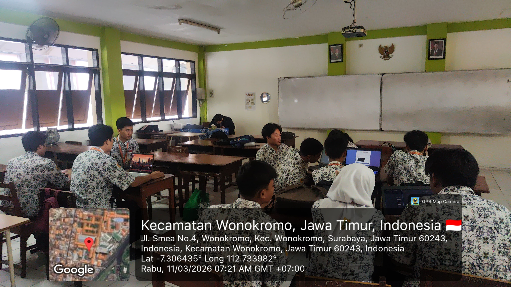
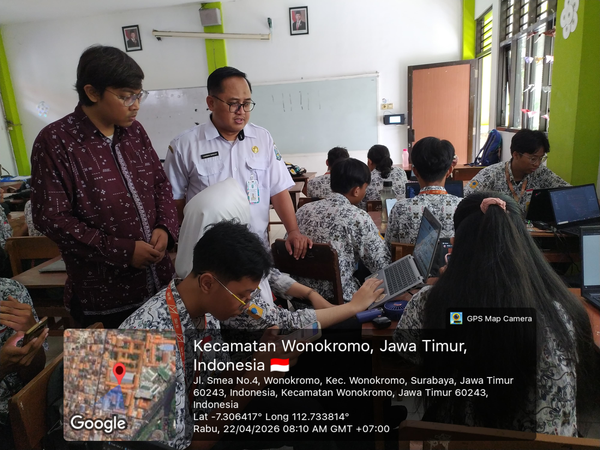

Tiga Siklus Praktik
Mengajar di Kelas X RPL
Mata Pelajaran Informatika · SMK Negeri 1 Surabaya · PPG Prajabatan Gelombang I 2026

Siklus I
PERENCANAAN WEBSITE — DESAIN BRIEF & WIREFRAME
Saat pertama masuk materi, murid ternyata sudah mulai menulis kode padahal tahap perancangan belum dilakukan sama sekali. Setelah berdiskusi dengan guru pamong, kami memutuskan untuk menghentikan sementara proses coding dan mengarahkan murid kembali ke tahap awal. Dari situ saya menjelaskan konsep desain brief dan wireframe beserta alasan mengapa pengembangan web perlu dimulai dari perencanaan.
Saat pertama masuk materi, murid ternyata sudah langsung melompat ke tahap coding dan melewati perancangan sama sekali. Setelah berdiskusi dengan guru pamong, kami memutuskan menghentikan sementara proses coding dan mengarahkan murid kembali ke tahap yang seharusnya. Saya menjelaskan konsep desain brief dan wireframe beserta alasan mengapa pengembangan web perlu dimulai dari perencanaan. Suasana kelas sangat hidup karena murid aktif berdiskusi dalam kelompok.
Murid awalnya bingung karena di mata pelajaran lain mereka selama ini langsung diajarkan coding tanpa melalui tahap perancangan, sehingga konsep desain brief dan wireframe terasa asing. Selain itu, kegiatan peer review antarteman yang sudah direncanakan dalam modul ajar tidak dapat terlaksana karena waktu tidak mencukupi.
Saya menjelaskan alur pengembangan web yang sebenarnya disertai contoh nyata, lalu memberikan scaffolding langsung kepada kelompok yang masih kesulitan saat berkeliling kelas.
Ketiga siklus menggunakan pendekatan Deep Learning berbasis Project-Based Learning (PjBL). Di Siklus I, PjBL diwujudkan melalui pembuatan desain brief sebagai produk nyata yang akan digunakan di siklus berikutnya, bukan sekadar latihan. Scaffolding diberikan bertahap sesuai kebutuhan tiap kelompok, sejalan dengan prinsip Tut Wuri Handayani Ki Hadjar Dewantara. Dimensi Profil Pelajar Pancasila yang disasar meliputi bernalar kritis, kreatif, gotong royong, dan mandiri.
Setelah dua pertemuan, semua kelompok berhasil menyelesaikan desain brief. Wireframe belum selesai seratus persen di semua kelompok, namun progresnya sudah terlihat jelas. Antusiasme murid meningkat ketika mereka menyadari bahwa inilah alur kerja yang digunakan pengembang web di dunia nyata.
Peer review perlu dipertimbangkan ulang dari sisi alokasi waktu. Kelompok yang selesai lebih awal dapat mengembangkan moodboard visual sebagai persiapan Siklus II.

Siklus II
PERANCANGAN UI/UX — PRINSIP DESAIN & PROTOTIPE VISUAL
Memasuki siklus kedua, murid sudah mulai memahami alur pengembangan web. Mereka mengembangkan desain brief dari siklus sebelumnya menjadi prototype visual menggunakan Figma atau Canva. Saya memberi kebebasan dalam memilih alat desain dan hasilnya sebagian besar kelompok memilih Canva, meski ada juga yang menggunakan Figma. Mereka membagi tugas secara mandiri sehingga setiap anggota kebagian mendesain setidaknya satu halaman.
Murid dijelaskan bahwa desain UI/UX dapat dikembangkan langsung dari wireframe Siklus I. Saya memberi kebebasan memilih alat desain dan menyarankan Figma atau Canva. Dari 34 murid dalam tujuh kelompok, sebagian besar memilih Canva karena lebih familiar, meski ada yang menggunakan Figma. Mereka membagi tugas secara mandiri, setiap anggota mendesain kurang lebih satu halaman, dan yang sudah selesai membantu halaman yang belum dikerjakan.
Beberapa murid belum menyelesaikan wireframe dari Siklus I tetapi sudah melanjutkan ke desain UI/UX. Sama seperti siklus sebelumnya, kegiatan peer review kembali tidak terlaksana karena keterbatasan waktu.
Murid yang wireframe-nya belum selesai tetap diperbolehkan melanjutkan ke UI/UX agar tidak tertinggal, dengan catatan wireframe diselesaikan bersamaan. Kebebasan memilih alat desain terbukti efektif karena murid bisa menggunakan alat yang sudah mereka kenal.
PjBL berlanjut dengan produk yang lebih kompleks berupa prototype desain UI/UX. Pendekatan Deep Learning terlihat dalam cara murid tidak sekadar meniru referensi visual, tetapi mempertimbangkan kebutuhan pengguna dalam setiap keputusan desain. Asesmen formatif dilakukan melalui observasi dan umpan balik langsung saat berkeliling, sedangkan asesmen reflektif dijalankan melalui lembar self-assessment di akhir pertemuan, sesuai semangat Kurikulum Merdeka yang menilai proses bukan hanya hasil akhir.
Semua kelompok mengumpulkan desain UI/UX tepat waktu melalui tautan yang dibagikan guru pamong. Pembagian tugas antarteman berjalan mandiri tanpa perlu arahan khusus, mencerminkan tumbuhnya dimensi kemandirian dan gotong royong dalam diri murid.
Bagi murid yang belum familiar Figma, tersedia template di Canva sebagai alternatif. Kelompok yang lebih cepat selesai dapat mengembangkan animasi transisi antarlaman atau menyusun style guide singkat sebagai persiapan Siklus III.

Siklus III
IMPLEMENTASI DESAIN → WEBSITE & PRESENTASI HASIL
Di siklus terakhir, saatnya desain diwujudkan menjadi website sungguhan. Murid mengimplementasikan prototype dari siklus sebelumnya ke dalam kode HTML dan CSS menggunakan VS Code. Mereka melakukan banyak revisi tampilan karena langsung mencocokkan kode dengan desain yang sudah dibuat. Di tengah proses, jadwal presentasi tiba-tiba dimajukan sehingga implementasi, penyusunan laporan, dan finalisasi website harus diselesaikan dalam satu pertemuan.
Murid mengimplementasikan desain UI/UX ke dalam kode program menggunakan VS Code secara native dengan HTML dan CSS tanpa framework. Mereka banyak melakukan revisi tampilan karena coding langsung didasarkan pada desain yang sudah dibuat sebelumnya. Pada pertemuan kedua, ada koordinasi mendadak bahwa jadwal presentasi dimajukan, sehingga murid harus membuat PPT, menyusun laporan, dan menyelesaikan website dalam waktu yang lebih singkat dari rencana awal.
Dari sisi teknis murid tidak ada kendala berarti. Kendala justru datang dari koordinasi: saya hanya berkomunikasi dengan guru pamong tanpa ada koordinasi langsung dengan guru mata pelajaran DPK, sehingga perubahan jadwal terasa mendadak dan tidak sesuai perencanaan.
Saya menerima keputusan perubahan jadwal dan menyesuaikan diri bersama murid. Prioritas dialihkan ke finalisasi website dan persiapan presentasi dalam waktu yang tersedia.
Di siklus ini PjBL mencapai titik penuhnya karena murid menghasilkan produk nyata berupa website yang bisa dibuka dan dipresentasikan. Asesmen sumatif melalui rubrik penilaian presentasi dan demo website menggantikan ujian tulis, sesuai semangat asesmen autentik Kurikulum Merdeka. Prinsip Tut Wuri Handayani terasa paling nyata di sini: saya berdiri di belakang, sementara murid maju dan bercerita tentang karya mereka sendiri.
Murid mampu beradaptasi dengan baik terhadap perubahan jadwal yang tiba-tiba tanpa kepanikan. Presentasi tetap berjalan meski tidak semua kelompok sempat saya pantau secara penuh. Saya juga diminta memberikan umpan balik kepada kelompok yang presentasi, yang menjadi pengalaman berharga dalam peran sebagai calon guru.
Ke depan, koordinasi dengan semua pihak yang terlibat perlu dilakukan lebih awal dan tidak hanya melalui satu jalur. Kelompok yang lebih cepat selesai dapat mengembangkan fitur tambahan menggunakan JavaScript dasar atau meningkatkan responsivitas halaman.